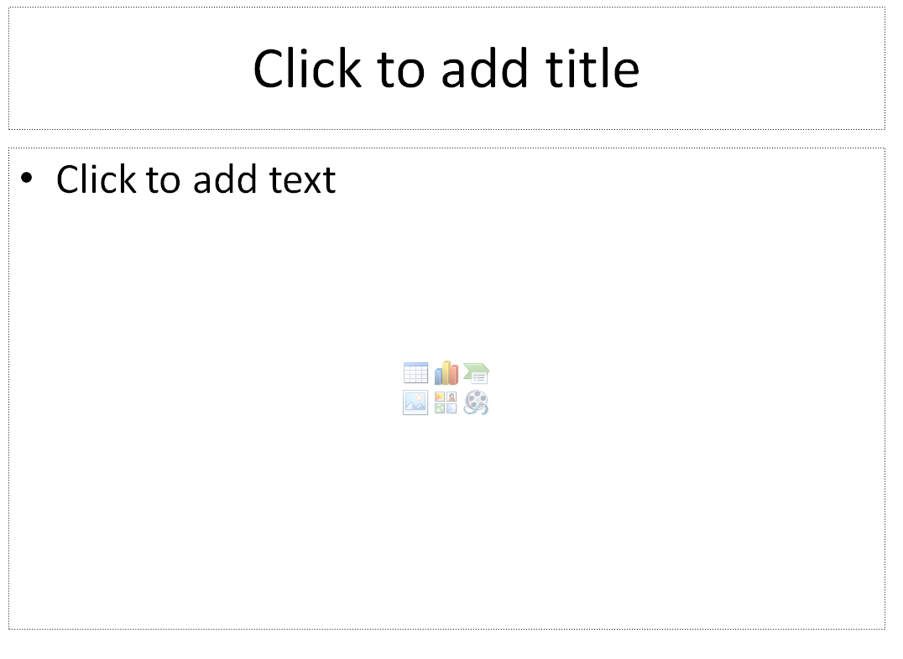

Geen testgevallen,
maar testideeën
Joep Schuurkes
@j19sch
TestNet Najaarsevenement 2014
created with
reveal.js
allereerst: een vraag
testgeval
gestructureerd
herhaalbaar
onderhoudbaar
herbruikbaar
traceerbaar
waarom deze test?
informatieschuld
testidee

testlog
“Om te componeren moet je noten schrijven, maar het vak van een componist is niet het schrijven van noten. Het vak van de componist is het concipiëren van de muziek.”
- Edsger W. Dijkstra
Denken als disicpline ( Noorderlicht , VPRO, 2001)
vragen
opmerkingen
bedenkingen?
bedankt!
@j19sch
testingcurve.wordpress.com